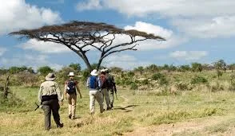

Uganda is one of those countries that becomes easier to love once you stop expecting it to behave like a packaged destination. It is warm,
varied, scenic, and deeply rewarding, but it asks for a little flexibility from first-time visitors. The more open you are to the country's
rhythm, the more generous the experience tends to feel.
For many travelers, the first surprise is just how much variety fits into one trip. Forest primates, classic safari wildlife, cities, lakes,
mountains, cultural stops, and long scenic drives can all belong to the same itinerary. That is wonderful, but it also means pacing matters.
Uganda is best enjoyed when you do not try to force every highlight into too few days.
A first visit should aim for balance: enough ambition to feel exciting, enough realism to stay enjoyable.
Understand The Rhythm Before You Arrive
Travel in Uganda often involves meaningful road time between destinations. Those drives are not necessarily a drawback. They can be scenic,
revealing, and full of small glimpses into everyday life. But they do shape the emotional pace of the trip, so it helps to think in terms
of regions rather than isolated attractions.
Build your journey around clusters that work naturally together, and leave room to absorb what you are seeing. Uganda rewards travelers who
think in sequence rather than in checklist form.
Pack For Reality, Not Fantasy
A first-time Uganda trip goes better when packing reflects the actual mix of environments. You may need lightweight clothing for warm days,
a layer for cooler evenings or highland mornings, sturdy shoes for trekking, and rain protection even in seasons that are considered drier.
This does not mean overpacking. It means preparing for range. Uganda's appeal lies partly in how quickly the setting can change, and your
bag should make that feel exciting rather than inconvenient.
Let The People Be Part Of The Journey
Uganda's warmth is not a cliché. Many travelers remember the hospitality as vividly as the landscapes. Guides, lodge staff, hosts, vendors,
and strangers offering directions all contribute to the experience in ways that make the journey feel lived rather than merely observed.
If you arrive with curiosity and patience, those interactions often become part of what makes the trip memorable. Uganda is not only a place
to look at. It is a place to meet.
What First-Time Visitors Usually Get Right
The happiest first-time travelers usually do a few simple things well: they allow enough time, choose a route that makes geographic sense,
stay flexible about weather and road conditions, and leave room for one or two slower moments between major highlights.
Do that, and Uganda has a good chance of becoming more than a successful trip. It can become one of those destinations that quietly resets
your expectations of what travel in East Africa can feel like.